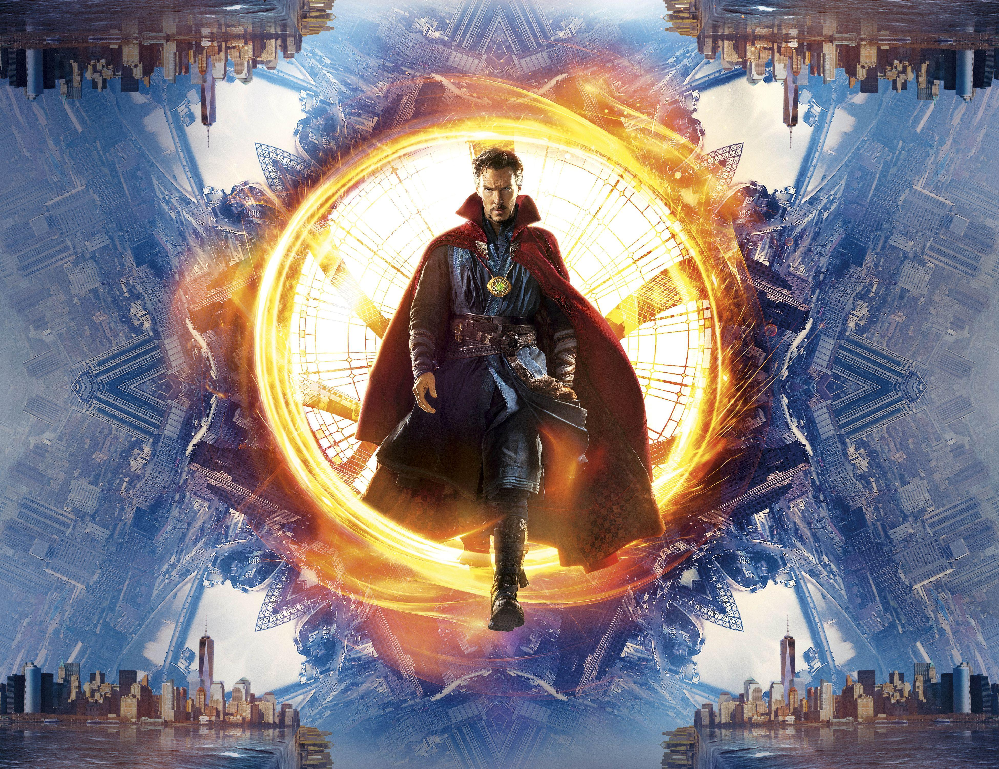

IronMan
Iron Man memiliki armor bertenaga yang memberinya kekuatan dan daya tahan super, terbang, dan sederet senjata. Armor diciptakan dan dipakai oleh
Stark (dengan pengecualian jangka pendek sesekali). Orang lain yang telah mengasumsikan identitas Iron Man termasuk teman lama Stark dan sahabat baiknya
James Rhodes rekan dekat Harold "Happy" Hogan; Eddie March; (sebentar) Michael O'Brien dan Riri Williams.
Selain model tujuan umum yang dimilikinya, Stark telah mengembangkan beberapa setelan khusus untuk perjalanan luar angkasa,[6] menyelam dalam laut, teknologi siluman
dan tujuan khusus lainnya. Stark telah memodifikasi jas, seperti baju besi berat Hulkbuster. Armor Hulkbuster terdiri dari add-ons ke yang disebut modular
armor, yang dirancang untuk meningkatkan kekuatan dan daya tahannya cukup untuk melibatkan Incredible Hulk dalam sebuah pertarungan. Model selanjutnya, yang dirancang
untuk digunakan melawan Thor, dimodelkan pada Destroyer dan menggunakan sumber kekuatan mistis. Stark mengembangkan sebuah paket elektronik selama Perang Armor,
jika dilekatkan pada armor yang menggunakan teknologi Stark, akan membakar komponen-komponen tersebut, sehingga membuat setelan itu tidak berguna. Paket ini tidak
efektif pada model selanjutnya. Sementara itu biasanya terkait dengan James Rhodes,
armor War-Machine dimulai sebagai salah satu armor khusus Stark. Kekuatan
Thor
Menurut Mitologi Nordik, Thor adalah dewa yang memiliki kekuatan hebat. Ia selalu berseteru dengan para Jotun sehingga
bertarung dengan mereka. Thor merupakan salah satu dewa Nordik yang memiliki kekuatan besar. Dengan kekuatannya, ia berusaha melindungi Asgard dan Midgard.
Ia juga dikenal sebagai Dewa Petir
Captain America
Captain America tidak memiliki kekuatan super, tetapi melalui Serum Super-Soldier dan pengobatan "Vita-Ray", dia berubah dengan kekuatan,
ketahanan, kelincahan, kecepatan, refleks, daya tahan, dan penyembuhan berada di puncak potensi alami manusia. Tubuh Rogers teratur mengisi
ulang serum super prajurit; tidak luntur. Meskipun ia tidak memiliki kekuatan super, Captain America adalah salah satu makhluk fana sedikit
yang telah dianggap cukup layak untuk memegang palu Thor yaitu Mjolnir.[5]
HawkEye
Hawkeye juga telah dilatih secara menyeluruh oleh Captain America dalam taktik, bela diri, dan pertarungan dengan tangan. Hawkeye juga unggul
dalam penggunaan senjata jarak jauh, terutama busur dan panah, dan membawa getaran yang berisi sejumlah "trik panah" yang disesuaikan. Dalam
perannya sebagai Ronin, Barton menunjukkan kemampuan hebat dengan katana dan senjata jarak dekat lainnya. Dia telah mendapatkan reputasi
karena bisa "mengubah benda menjadi senjata", dan telah terlihat menggunakan barang-barang seperti piring timah, koin, batang dan potongan
lainnya yang sangat berpengaruh terhadap musuh-musuhnya
Dr.Strange

Doctor Strange digambarkan sebagai "pesulap terkuat di kosmos"[16] dan "lebih kuat daripada sesama humanoids" oleh Eternity,
sentimen Marvel Universe.[17] Dia memegang gelar Sorcerer Supreme dari tahun 1973 (dengan kematian Ancient One)[18] sampai sekarang, kecuali
selama interupsi dari tahun 1992[19] sampai tahun 1995.[20] Dia melepaskan gelar itu sekali lagi pada tahun 2009,[21] namun merebut kembali
pada tahun 2012 saat dia membuktikan dirinya bersedia melindungi dunia bahkan tanpa gelar.[22]
SpiderMan
Ketika Spider-Man pertama kali muncul di awal 1960-an, remaja di buku komik superhero biasanya terdegradasi ke peran sidekick ke protagonis.
Serial Spider-Man memecahkan masalah dengan menampilkan Peter Parker, siswa SMA di balik identitas rahasia Spider-Man dan dengan "obsesi diri
dengan penolakan, ketidakmampuan, dan kesepian" sehingga pembaca muda bisa berhubungan.[1] Sementara Spider-Man memiliki semua bakat sidekick,
tidak seperti pahlawan remaja sebelumnya seperti Bucky dan Robin, Spider-Man tidak memiliki mentor superhero seperti Captain America dan Batman;
dengan demikian dia harus belajar untuk dirinya sendiri bahwa "dengan kekuatan besar di sana juga harus ada tanggung jawab yang besar"
sebuah garis yang termasuk dalam kotak teks di panel akhir cerita Spider-Man yang pertama namun kemudian secara surut dikaitkan dengan wali
mereka, mendiang Paman Ben